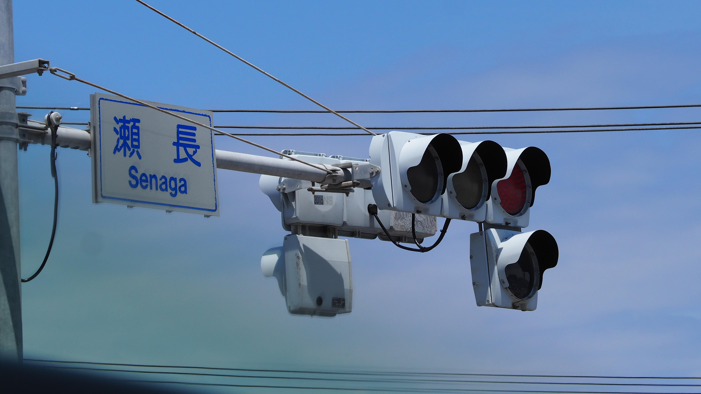

しりとるのギャラリー
ようこそ！私が撮った写真を表示しています
多分ここに表示されているのはRAW編集したあとのやつだと思います。（たぶん）

沖縄で撮った写真ですね なんかうっすらレンズの中にごみがあって写真にも写ってるんですよね。
意味わかんない
ようこそ！私が撮った写真を表示しています
多分ここに表示されているのはRAW編集したあとのやつだと思います。（たぶん）

沖縄で撮った写真ですね なんかうっすらレンズの中にごみがあって写真にも写ってるんですよね。
意味わかんない